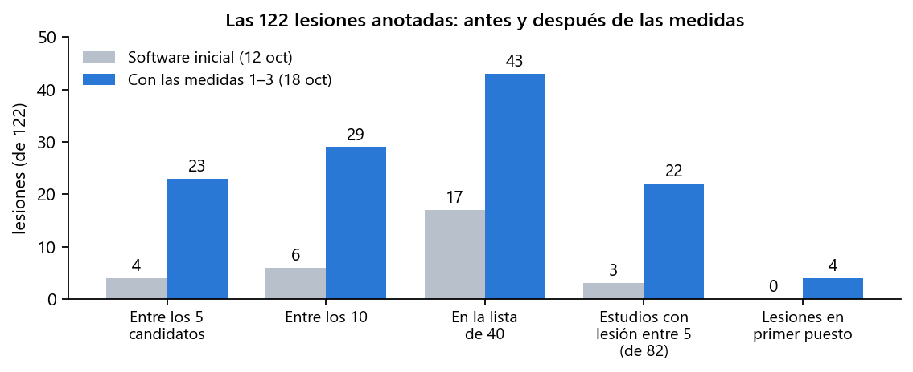
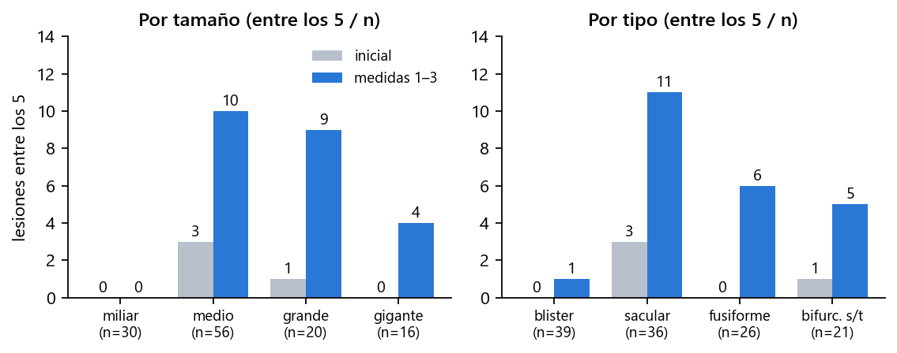
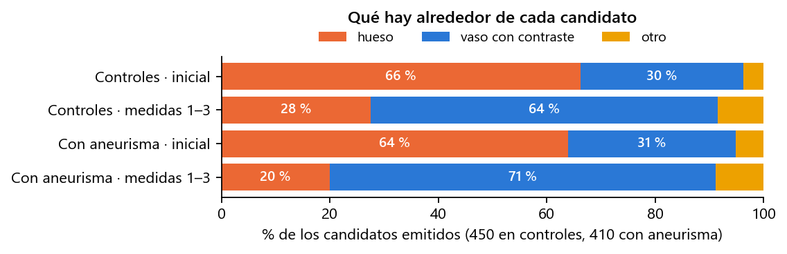
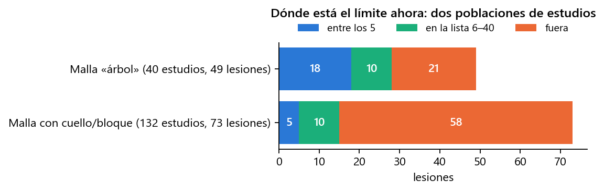
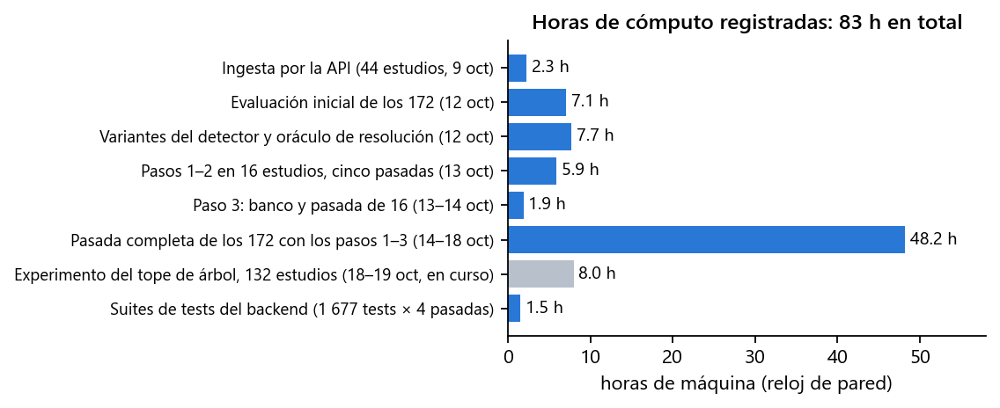

En diez días se ha incorporado el primer dataset público con verdad de terreno (172 angio-TC de cabeza con 122 aneurismas segmentados a mano), se ha medido cómo rendía el detector de Prospective sobre él, se han identificado y corregido las tres causas principales del fallo y se ha vuelto a medir sobre los 172 estudios. Las lesiones que la aplicación coloca entre sus 5 candidatos pasan de 4 a 23, y los candidatos que apuntaban al cráneo bajan de dos tercios a uno de cada cuatro. Lo que queda por resolver está identificado, con el siguiente experimento ya en marcha.
| Fecha | Trabajo | Resultado | Estado |
|---|---|---|---|
| 8 oct | Auditoría de seguridad de la API y el acceso; búsqueda de datasets DICOM con verdad de terreno | 7 hallazgos corregidos el mismo día. Elegido Zenodo 15697196 (CC-BY): el único con DICOM + segmentación manual del aneurisma | hecho |
| 9 oct | Ingesta de 44 estudios por la API, como un usuario, y banco de medida del detector | Primer dato real: 2 aciertos de 34 aneurismas en angio-TC. Un error de borrado corregido | hecho |
| 12 oct | Evaluación de los 172 estudios con el software tal cual (fuera del servidor, mismo camino), ajustes del detector y un oráculo de resolución | 4 de 122 lesiones entre los 5; tres causas medidas; informe técnico y ejecutivo | hecho |
| 13 oct | Medidas 0, 1 y 2: red de seguridad para 3DRA, segmentación a resolución nativa donde importa, hueso fuera de la máscara en TC | Medidas sobre 16 estudios; 3DRA sin cambios | hecho |
| 13 – 14 oct | Medida 3: el detector sobre la malla limpia (regla absoluta de curvatura y orden por área) | En los 16 estudios: entre los 5 de 2 a 4, entre los 10 de 6 a 8 | hecho |
| 14 – 18 oct | Pasada completa de los 172 con las medidas 1 – 3 (48 h de máquina, tres interrupciones por suspensión del PC) | Este informe: 23 de 122 entre los 5; el resto de cifras de la sección 4 | hecho |
| 18 – 19 oct | Experimento sobre el límite que queda (canales de grosor en los estudios de cabeza y cuello), sobre las mallas ya guardadas | Lanzado el 18 a las 21:40; unas 8 h | en curso |
Zenodo 15697196: 172 angio-TC de cabeza (145 de ellas incluyen el cuello), 82 con aneurisma y 90 controles, con cada aneurisma segmentado a mano en un fichero STL. Son 122 lesiones: la mitad miden 5 mm o menos, 39 son «blister» de 1,3 – 3,6 mm, 16 son gigantes, 20 están calcificadas y 22 trombosadas. Es un conjunto difícil a propósito, y es exactamente el tipo de examen (TC de cabeza entera, con el hueso tocando los vasos con contraste) para el que Prospective no se había medido nunca: su detector se había calibrado sobre dos casos de angiografía rotacional 3D (3DRA), donde no hay hueso.
Criterio de acierto, el mismo en todas las medidas: la lesión cuenta como detectada si uno de los candidatos que la aplicación enseña está a menos de 5 mm o de su diámetro. «Entre los 5» es la lista que ve el clínico; «entre los 40» es la lista larga del banco, que sirve para saber si la lesión existe para el detector aunque quede atrás.
Con el software tal cual estaba, 4 de 122 lesiones quedaban entre los 5 candidatos, ninguna en el primer puesto, y solo 3 de los 82 estudios con aneurisma tenían la lesión en la lista corta. La aplicación devolvía siempre 5 candidatos, también en los 90 controles sanos, y dos tercios de esos candidatos estaban sobre hueso. Las tres causas se midieron por separado:
157 de 172 estudios superan el tope de memoria y se segmentaban reducidos hasta vóxeles de 2,5 mm. Un saco de 5 mm eran dos vóxeles; 31 lesiones no llegaban a la malla.
El método de segmentación no aplicaba techo de densidad en TC: el cráneo entraba en la malla, la pieza mayor pesaba 760 cm³ y los dos canales que miden el grosor del vaso no llegaban a ejecutarse nunca.
De las 91 lesiones que sí estaban en la malla, el detector listaba 15: sus umbrales eran percentiles de la propia malla, calibrados sobre un caso sin hueso.
Cuatro medidas, todas enrutadas por modalidad para no tocar lo que ya funcionaba en 3DRA, y cada una medida antes de pasar a la siguiente:
| # | Medida | Qué hace | Qué se midió |
|---|---|---|---|
| 0 | Red de seguridad 3DRA | Una regresión automática sobre los dos casos de referencia de 3DRA (lesión en el primer puesto en ambos) que se ejecuta tras cada cambio. | «Sin diferencias» tras cada una de las medidas 1 – 3. |
| 1 | Resolución nativa donde importa | La pasada reducida localiza el árbol vascular; después se vuelve a segmentar a la resolución del DICOM solo en una banda de 5 mm alrededor, por baldosas, sin superar la memoria. | Lesiones fuera de la malla: de 31 a 16 en los 172. Coste: 11 min de segmentación por estudio en vez de 1. |
| 2 | Hueso fuera de la máscara en TC | Lo que supera 700 HU (hueso) se quita antes de rellenar, con un margen de 1,5 mm; en la pasada gruesa, 1 200 HU sin margen para no cortar la carótida en la base del cráneo. En 3DRA no se aplica. | Pieza mayor de la malla: de 760 a 196 cm³. Candidatos sobre hueso: de 560 a 206 de 860. En 40 estudios la malla es ya un árbol limpio y se encienden los canales de grosor. |
| 3 | El detector sobre la malla limpia | Regla absoluta de curvatura (la que ya usaba 3DRA) en lugar del percentil, y «la región convexa más grande primero» en vez de una puntuación con pesos. | Más lesiones entre los 5 y entre los 10 sin aumentar el hueso en los controles; descartadas, tras medirlas, seis variantes que cambiaban qué lesiones salían pero no cuántas. |
Herramientas construidas por el camino y que quedan: evaluación de los 172 fuera del servidor por el mismo camino que la API (reanudable, con lista larga y traza por región), banco del detector que separa lo caro (decimar y medir regiones) de lo barato (reglas), análisis por lesión a partir de los registros, y 92 tests nuevos. Suite del backend: 1 677 tests en verde.

Las mismas 122 lesiones, el mismo criterio de acierto y la misma herramienta de medida; solo cambia el software entre las dos pasadas. Los 16 estudios con los que se diseñaron las medidas salen igual dentro de la pasada completa, así que la mejora no es un ajuste a ese subconjunto.

Los sacos medianos, grandes y gigantes han aparecido; los grandes y gigantes, siempre a través de los canales de grosor (calibre y cociente), que antes no se ejecutaban. Los miliares y los blister siguen sin verse: no es un umbral, es que los canales actuales no tienen con qué verlos.

Los candidatos han dejado de apuntar al cráneo. En los controles, 10 de 90 tienen 3 o más candidatos sobre hueso (antes 70) y ninguno los 5 (antes 20). La aplicación sigue devolviendo 5 candidatos en todos los estudios, incluidos los sanos: el criterio para decir «ninguno» es la medida 4 del plan.

Hay dos poblaciones. Cuando la malla pasa la prueba de «árbol vascular» (pieza mayor ≤ 100 cm³ y ≤ 3 mm de espesor; 40 estudios, casi todos de cabeza sola), 18 de 49 lesiones están entre los 5. Cuando no la pasa (132 estudios, 126 de ellos de cabeza y cuello, con el árbol del cuello y las venas en la misma malla), son 5 de 73 y solo corre el canal de curvatura.
Todo se ha ejecutado en un portátil (Intel i7-8550U de 4 núcleos, 16 GB de RAM, sin GPU útil para esto), un solo proceso a la vez porque dos procesos de VTK simultáneos agotan la memoria. La pasada final de los 172 estudios tardó 48 h de reloj repartidas en cinco días, con tres interrupciones (dos suspensiones del PC y una caída sin rastro); el lanzador se reanuda solo y relanza el proceso cada 6 estudios por una fuga de memoria conocida de las librerías. Las 83 h del gráfico son horas de máquina registradas en los ficheros de resultados, no horas de persona.
Coste por estudio con las medidas aplicadas: 16 min de mediana (11 de segmentación y 2 de detección; hasta 47 min en los volúmenes de 1 100 cortes de cabeza y cuello, frente a 1 – 2 min antes). Es lo que tardará la aplicación con una angio-TC de ese tipo en una máquina igual; con un servidor de 8 núcleos y 64 GB bajaría a la mitad o menos, porque las baldosas de la banda nativa se pueden paralelizar y el tope de memoria dejaría de reducir la resolución.

| Fase | Estudios | Horas de máquina | Nota |
|---|---|---|---|
| Ingesta por la API (9 oct) | 44 | 2,3 | 1,8 GB por estudio en el servidor; se borraron después (40 GB) |
| Evaluación inicial (12 oct) | 172 | 7,1 | Software sin cambios |
| Variantes del detector y oráculo de resolución (12 oct) | 172 + 172 + 82 | 7,7 | Sobre las mallas guardadas; el oráculo resegmenta una caja de ±30 mm |
| Medidas 1 – 2, cinco pasadas de diseño (13 oct) | 16 × 5 | 5,9 | Una pasada por variante de la máscara de hueso |
| Medida 3, banco y pasada (13 – 14 oct) | 16 | 1,9 | Catorce variantes del detector medidas en segundos cada una |
| Pasada completa con las medidas 1 – 3 (14 – 18 oct) | 172 | 48,2 | 31,6 h de segmentación y 10,3 h de detección; el resto, carga de DICOM y suspensiones |
| Experimento del tope de árbol (18 – 19 oct, en curso) | 132 | ≈ 8 | Solo detección, sobre las mallas guardadas |
| Suites de tests (1 677 tests, 22 min cada una) | — | 1,5 | Cuatro pasadas completas |
| Total | ≈ 83 | Disco: 12 GB de mallas y volúmenes de la pasada final, 25 GB el dataset |
| # | Qué | Por qué y qué decide | Esfuerzo |
|---|---|---|---|
| 1 | Cerrar el experimento del tope de árbol (en curso) | Si los canales de grosor mueven las lesiones en los 132 estudios de cabeza y cuello, se sube el tope por modalidad y se mide el hueso en los controles. Si no, se recorta a la región intracraneal antes de detectar. | 8 h de máquina + 1 día |
| 2 | Decidir el commit | Todo el trabajo de las medidas 0 – 3 está sin commitear (19 ficheros modificados y 31 nuevos, 92 tests nuevos). El repositorio es público: el commit se hace por lista explícita de ficheros y nunca con datos de pacientes ni del dataset. | Decisión |
| 3 | Comprobación en la aplicación | Subir un estudio del dataset por la interfaz y verificar que la pantalla cuenta lo mismo que el banco (vóxel efectivo, tejido del candidato, puestos). | Medio día |
| 4 | Criterio absoluto y «sin candidatos» | Hoy la aplicación devuelve 5 candidatos también en un control sano. Con el hueso fuera ya tiene sentido calibrar sobre los 90 controles un umbral por canal y devolver lista vacía cuando nada lo supere. | 1 – 2 semanas |
| 5 | Honestidad de la pantalla | Quitar la barra de «confianza» (es el puesto convertido a cifra: el primer candidato de un control luce 1,0), mostrar el tejido alrededor de cada candidato y el vóxel efectivo de la malla. | Días |
| 6 | Rendimiento | Paralelizar las baldosas de la banda nativa y revisar el tope de memoria en un servidor con más RAM: de 16 min por estudio a menos de 8. | 1 semana |
| 7 | Blister y miliares | Un canal nuevo (calibre a lo largo de la línea central, o detección sobre el volumen). Es investigación; mientras tanto, documentar que no se detectan. | Alto |